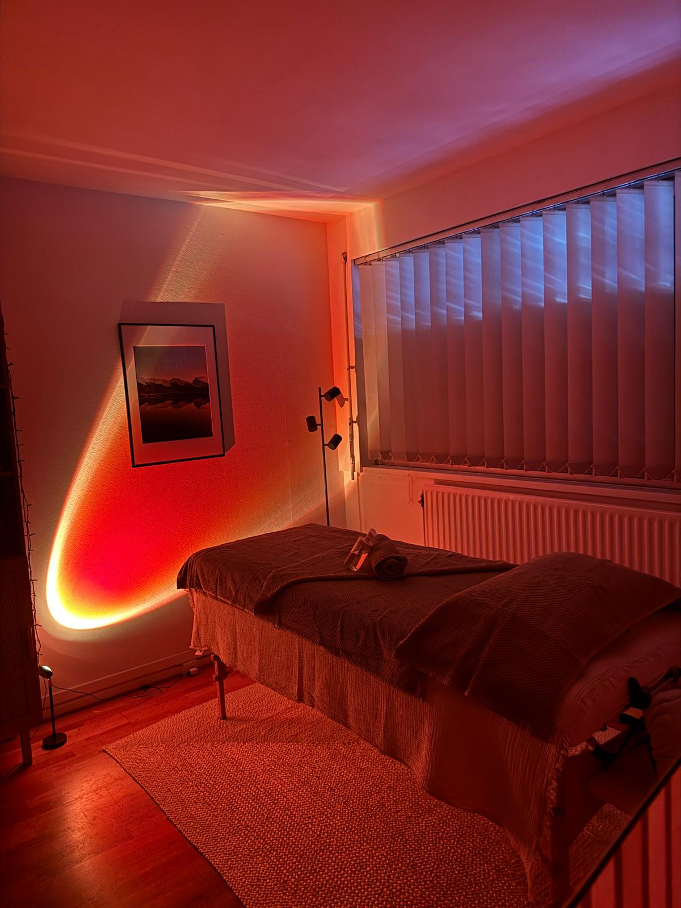

Endométriose
L'alimentation peut considérablement réduire l'inflammation et les douleurs liées à l'endométriose. Je vous accompagne vers un régime anti-inflammatoire adapté à votre quotidien.
En savoir plus →Diététicienne · Grenoble
Accompagnement nutritionnel centré sur la santé de la femme — de la fertilité à la ménopause, avec douceur et bienveillance.
Réserver un rendez-vous Découvrir mes spécialitésÀ propos
Diététicienne spécialisée en santé de la femme, je vous accompagne avec bienveillance à chaque étape de votre vie : SMOP, endométriose, fertilité, grossesse, post-partum, ménopause ou rééquilibrage alimentaire.
Mon approche est entièrement personnalisée, sans restriction, sans frustration et sans culpabilité. Ensemble, nous construisons des habitudes durables, adaptées à votre mode de vie, pour vous aider à atteindre vos objectifs tout en prenant soin de votre santé.
Je vous reçois au 16 place Sainte-Claire, Grenoble, en consultation individuelle.
RPPS 10008231598 · ADELI 389505967
Mes spécialités
Chaque étape de la vie féminine est unique. Mon accompagnement nutritionnel s'adapte à vos besoins spécifiques, que vous soyez en pleine transition hormonale, en projet de maternité ou que vous ayez une problématique de santé particulière.
L'alimentation peut considérablement réduire l'inflammation et les douleurs liées à l'endométriose. Je vous accompagne vers un régime anti-inflammatoire adapté à votre quotidien.
En savoir plus →Le Syndrome Métabolique Ovarien Polyendocrinien se manifeste par des déséquilibres hormonaux et métaboliques. L'alimentation est un levier puissant pour un bon équilibre glycémique, soutenir l'ovulation et atténuer les symptômes au quotidien.
En savoir plus →Bien manger pendant la grossesse, c'est prendre soin de vous et de votre bébé. Je vous guide avec des conseils pratiques et bienveillants tout au long de cette période.
La nutrition joue un rôle clé dans la fertilité féminine. Optimisons ensemble votre alimentation pour soutenir votre projet de maternité.
Après l'accouchement, votre corps a besoin de récupérer. Un suivi nutritionnel adapté vous aide à retrouver énergie et équilibre, en douceur.
En savoir plus →La ménopause s'accompagne de bouleversements hormonaux que l'alimentation peut adoucir. Je vous aide à traverser cette transition avec sérénité.
Soin du corps
Le drainage lymphatique brésilien est une technique de massage rythmé et dynamique qui stimule le système lymphatique, favorise l'élimination des toxines et réduit la rétention d'eau.
Chaque séance est entièrement personnalisée : lumière tamisée, musique apaisante et senteurs choisies créent une atmosphère unique, pensée pour vous offrir une relaxation profonde et un moment rien qu'à vous.
Cette technique est particulièrement bénéfique pour les femmes en post-partum, après une chirurgie, ou pour les femmes ménopausées en quête de légèreté et de bien-être général.

Tarifs
* Le tarif étudiant s'applique sur présentation d'une carte étudiante valide.
* Séance de drainage réalisée au cabinet. Durée variable selon la prestation.
✨ Les cures incluent 1 séance offerte.
Prête à commencer votre accompagnement ? Réservez directement en ligne.
Prendre rendez-vous sur DoctolibConseils nutrition
Quel régime alimentaire adopter pour réduire l'inflammation et les douleurs.
Lire l'article →Comment l'alimentation aide à réguler la glycémie et soutenir l'ovulation.
Lire l'article →Ce que le drainage peut vraiment faire, et ce qu'il ne peut pas faire.
Lire l'article →Bien manger après l'accouchement, avec ou sans allaitement.
Lire l'article →Questions fréquentes
Non, une ordonnance n'est pas obligatoire. Vous pouvez prendre rendez-vous directement, notamment via Doctolib.
La Sécurité sociale ne rembourse pas les consultations diététiques hors parcours spécifique, mais de nombreuses mutuelles proposent une prise en charge partielle ou forfaitaire. Renseignez-vous auprès de votre mutuelle avant votre rendez-vous.
Le drainage lymphatique esthétique n'est pas remboursé par la Sécurité sociale ni généralement par les mutuelles, car il s'agit d'un soin de bien-être et non d'un acte médical prescrit.
Oui, les consultations peuvent se faire à distance en visioconférence, via Alivio ou Google Meet, en plus des rendez-vous au cabinet.
Le bilan diététique initial dure environ 1h, et les consultations de suivi entre 30 et 45 minutes. Pour le drainage lymphatique, une séance corps entier dure environ 1h, et une séance sur une zone au choix environ 40 minutes.
Oui : problème cardiovasculaire non traité, grossesse de moins de 3 mois, cancer, ou pathologie dermatologique. En cas de doute, parlez-en avant votre rendez-vous.
Un rendez-vous peut être annulé ou reporté gratuitement jusqu'à 48h avant l'heure prévue.
Les paiements par carte bancaire, espèces et virement sont acceptés.
Me retrouver
Avis clients
« Un drainage lymphatique au top, le 1er et très certainement pas le dernier, contact pro, agréable, et déjà hâte de revenir ! »
« 1ère visite, extrêmement agréable, Lucile explique tout, le massage est à la fois doux et efficace. Elle est également très attentionnée. J'ai senti les effets dès la fin de la séance. »
« Je recommande Lucile sans hésitation pour le drainage lymphatique. Très accueillante, souriante et attentionnée, elle prend le temps de mettre à l'aise et les résultats sont au rendez-vous. »
« Drainage lymphatique incroyable ! Une détente et un résultat sur mon ventre que je n'aurais pas cru possible. Je reviendrai c'est sûr. »
« J'ai effectué un drainage lymphatique avec Lucile, c'était un moment vraiment agréable. Lucile est très douce et à la fois énergique dans ses mouvements. Le drainage a très bien fonctionné et j'ai vu des effets immédiats. Je recommande ! »
« Je recommande vivement Lucile LE POCREAU !! Elle est bienveillante, agréable, de très bon conseil et surtout à l'écoute. Enfin une nutritionniste qui n'est pas dans le jugement ! »
« Lucile m'a accompagné en suivi diététique suite à mes traitements de chimiothérapie et de radiothérapie. Elle est très agréable et professionnelle. Grâce à ses conseils j'ai pu retrouver une alimentation saine et équilibrée. »
« Professionnelle, et à l'écoute ! Lucile m'a été d'une grande aide pour ma préparation sportive 👍 »
« J'ai eu la chance de participer à un atelier Onigiri animé par Lucile. L'atelier était très bien organisé et s'est déroulé dans la convivialité et la bonne humeur. Je recommande ! »
« Diététicienne sympa et bien à l'écoute de mes besoins. Elle prend le temps de tout décortiquer et a une volonté de pousser vers le haut sans décourager ! Je recommande à 100% ! »
« Lucile a su être à l'écoute pour comprendre mes problèmes. J'ai redécouvert le plaisir de manger sans me priver et les résultats sont déjà satisfaisants. Je recommande. »
« Super diététicienne qui est dynamique et à l'écoute. En plus c'est trop pratique de pouvoir faire la consultation tranquillement chez moi sans avoir à me déplacer. Je recommande ! »
« Professionnelle, à l'écoute et disponible. Elle prend le temps de vous écouter, de vous accompagner et reste joignable même en dehors des consultations. Je recommande entièrement. »
« Lucile est très professionnelle et à l'écoute. Je suis très content de notre suivi diététique. »